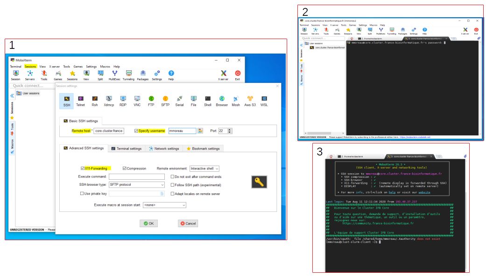

How to connect to the IFB server
Attention
Because IFB-core Cluster is a shared infrastructure you will have to pay attention to the command you use to start a job. They all must start with "srun".
You can refer to IFB-core Cluster documentation for more detail about logging, data management, job submission.
Sign in on the server
- On MacOS or Linux using a terminal window
ssh <login>@core.cluster.france-bioinformatique.fr
-
On Windows using for example MobaXterm
1. In Session > SSH * Remote Host : core.cluster.france-bioinformatique.fr * Specify username : ticked and filled in your login * Advanced SSH settings : tick X11-Forwarding
2. Enter your password
3. You should be logged on the IFB-core Cluster
